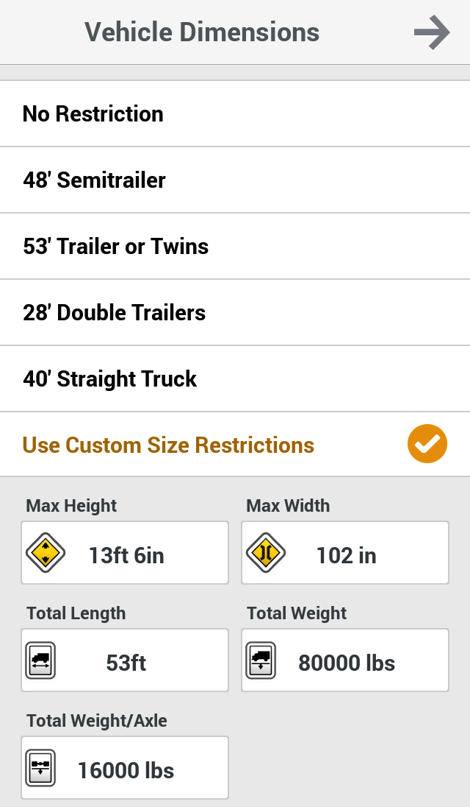
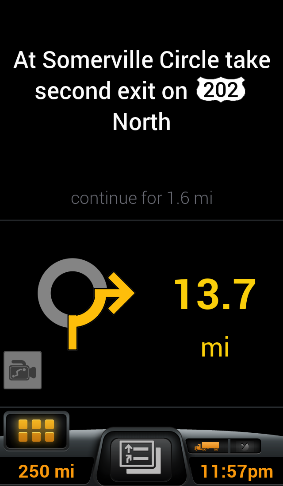
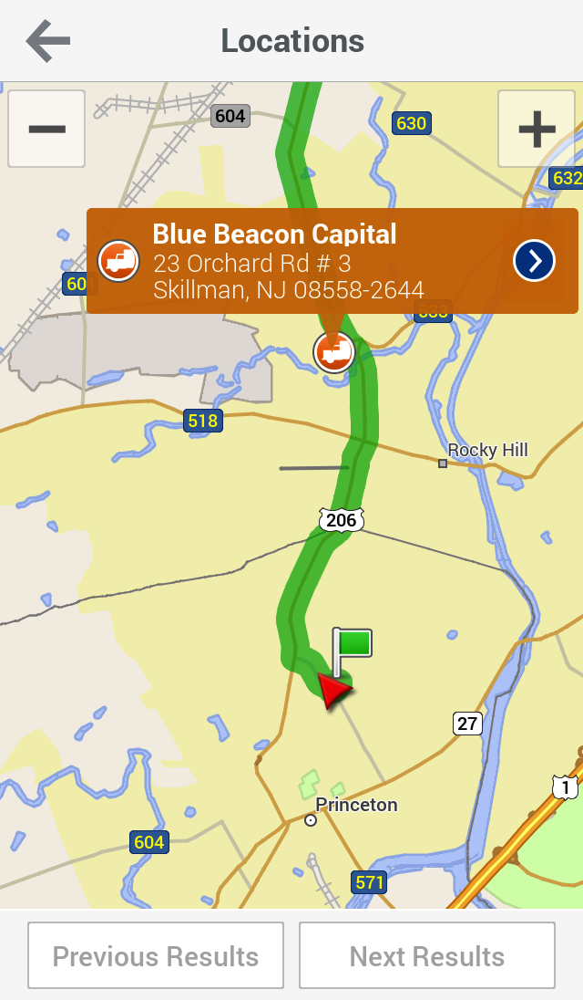
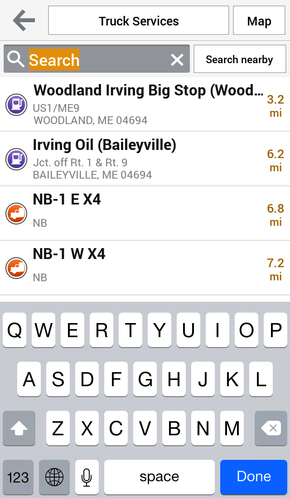
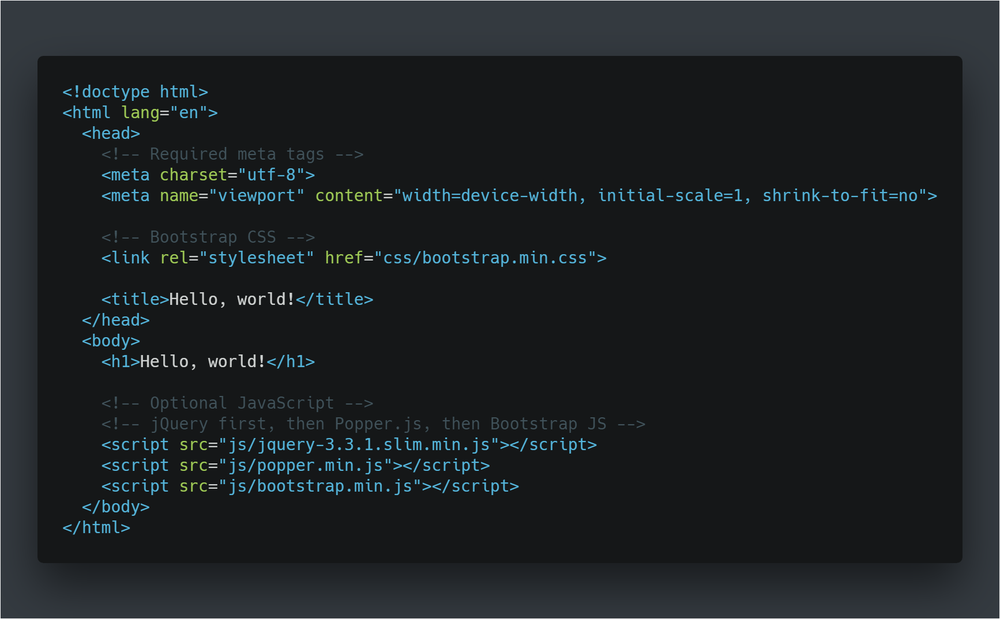
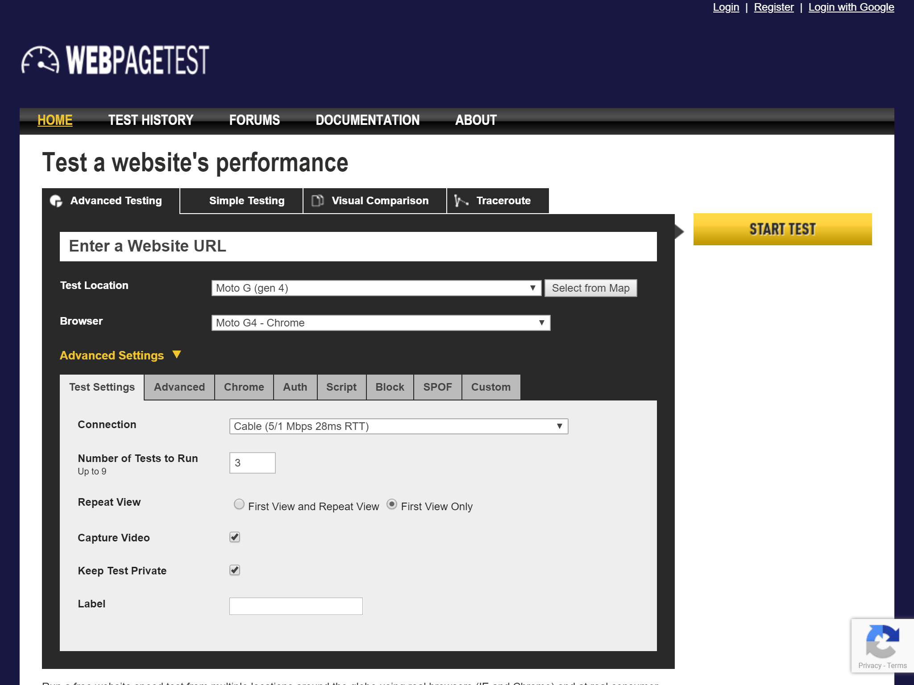

Christian Oliff
>
GitHub
Twitter
👨💻 Me
I ❤️ Open Source
html5boilerplate.com
getbootstrap.com
coliff.github.io/bootstrap-ie8/
🤔 Why?
- Yahoo increased traffic by 9% for every 400ms of improvement
- Amazon increased revenue by 1% for every 100ms of improvement
- Mozilla had 60 million more Firefox downloads per year, by making their pages 2.2 seconds faster
- Google take page-speed into account when ranking
- A one second delay in mobile load times can impact mobile conversions by up to 20% >
- The BBC found they lost an additional 10% of users for every additional second their site took to load.
- DoubleClick by Google found 53% of mobile site visits were abandoned if a page took longer than 3 seconds to load.
🖼️ Images
🖼️ Images
- Optimise Images > (JPG, PNG, GIF can all be losslessly optimised)
- Use the correct file format for the type of image JPG for photos,
- Avoid PNG24 unless you need alpha transparency JPG is usually 1/4 of the size
- For icons/logos use SVG if possible
- Minify SVG files
- Consider using a CDN such as Cloudinary or AWS CloudFront
- Set background colour when using images as backgrounds >
🖼️ Images
🖼️ Images





🖼️ Images
- Original - 290 KB
(PNG24) 640 x 1096 - Losslessly Optimise - 206 KB
(PNG24) 640 x 1096 - Convert to 256 Color - 55 KB
(PNG8) 640 x 1096 - Low-DPI version for PC - 31 KB
(PNG8) 320 x 548
🖼️ Images
🖍️ CSS
🖍️ CSS
Minify your CSS
169 KB 😒
138 KB 🙂
🖍️ CSS
Avoid
@imports
@import url("navigation.css");
📜 JavaScript
📜 JavaScript
Remove unneeded scripts
📜 JavaScript
Minify your scripts
120 KB 😒
50 KB 🙂
📜 JavaScript
Is each script needed for rendering the page?
If not, move it to the footer
📜 JavaScript
Use a CDN if possible >
📜 JavaScript
Consider Combining scripts
📓 Fonts
📓 Fonts
- Consider using the 'Native Font Stack' >
- If you're serving your own fonts - make sure the WOFF2 file format is available
-
Use Preconnect if loading Google Fonts
📹 Video
📹 Video
- Use lower resolution video for background video effects >
🗂️ Caching
🗂️ Caching
-
Set a long cache life for static assets
(365 days recommended) -
Need to update a static asset?
🔧 Speed Test Tools
Google Lighthouse

Microsoft Sonarwhal
https://sonarwhal.com/scanner/
Webpage Test
http://www.webpagetest.org/
Platform Specific Tips
WordPress
WordPress Plugins
GitHub Pages
Cloudflare
Cloudflare
- Register a domain name
- Change the Name Servers to point to Cloudflare
- Change DNS A record to point to GitHub Pages
- Add
CNAMEfile to your repo
Advanced Topics
- Service Workers for storing static assets
- Consider moving to HTTP/2 if your server supports it
- Use UnCSS to remove all unused CSS from your stylesheets
Further Reading
🤨 Questions?
About These Slides
- Created with Reveal.JS
- Coded with Visual Studio Code
- Font used is Roboto Light
- Hosted on GitHub Pages
- Offline Support with UpUp.js